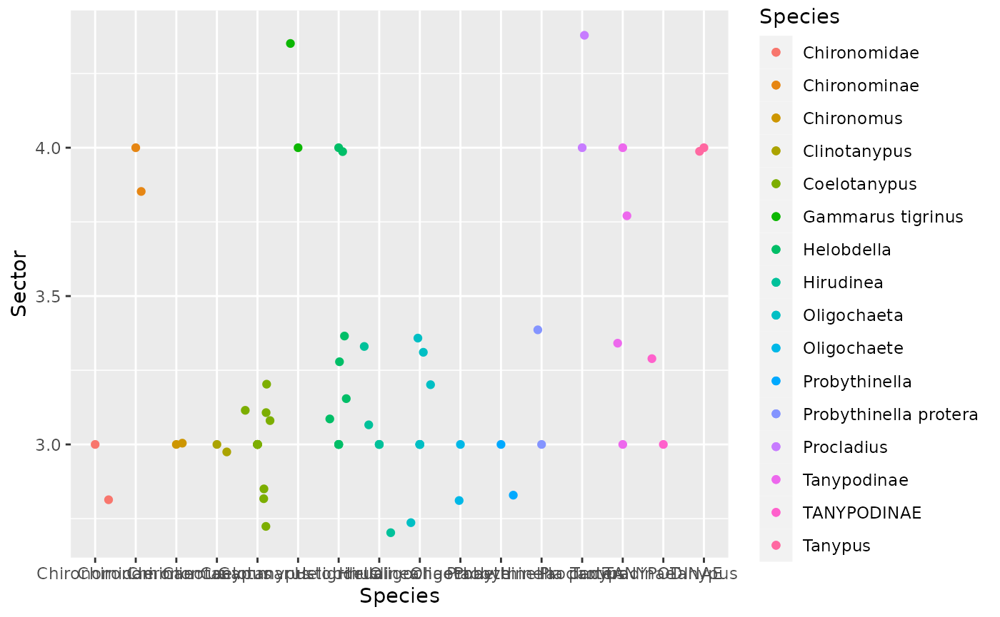
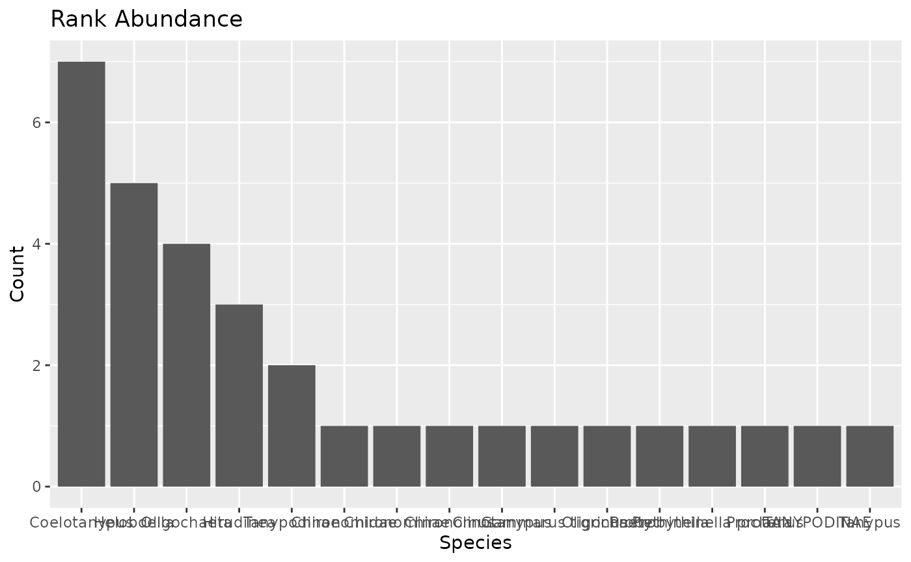

BiodiversityTutorial.Rmd
devtools::install_github("camrynbigelow/biodiversity.pkg")
library(bigelow.pkg)
library(tidyverse)In this tutorial, we will use the invertebrate data collected from Lake Maurepas by our lab’s postdoc. This data is not complete.
#install.packages("googlesheets4")
library(googlesheets4)
googlesheets4::gs4_deauth()
invert<-read_sheet("https://docs.google.com/spreadsheets/d/1qF8C3aSGqML05NBuKGDH_ReAo4UITNWAvi0d269KIAs/edit?usp=sharing")
fake<-read_sheet("https://docs.google.com/spreadsheets/d/1VnkbYtR2x1qKKU8HcksrMJM8SgW641ICu6IL2nSFFOo/edit?usp=sharing")This package was intended for processing biodiversity data, specifically for creating rank abundance graphs and comparing biodiversity assemblages with abiotic parameters using genetic data from environmental DNA. This R package will clean your data and will use your data to generate NMDS plots, rank abundance graphs, and abundance maps. This package was created for a biological data analysis class.
##Function 1 (clean your data): remove_nas #This function will clean your data by removing NAs. Make sure to save your clean data as a variable.
## ── Attaching core tidyverse packages ──────────────────────── tidyverse 2.0.0 ──
## ✔ dplyr 1.1.4 ✔ readr 2.1.4
## ✔ forcats 1.0.0 ✔ stringr 1.5.1
## ✔ ggplot2 3.4.4 ✔ tibble 3.2.1
## ✔ lubridate 1.9.3 ✔ tidyr 1.3.0
## ✔ purrr 1.0.2
## ── Conflicts ────────────────────────────────────────── tidyverse_conflicts() ──
## ✖ dplyr::filter() masks stats::filter()
## ✖ dplyr::lag() masks stats::lag()
## ℹ Use the conflicted package (<http://conflicted.r-lib.org/>) to force all conflicts to become errors##
## Attaching package: 'magrittr'
##
## The following object is masked from 'package:purrr':
##
## set_names
##
## The following object is masked from 'package:tidyr':
##
## extract
invert<-read_csv("../data/invert_data.csv")## Rows: 109 Columns: 16
## ── Column specification ────────────────────────────────────────────────────────
## Delimiter: ","
## chr (8): GlobalID_0, GridId, InvertebratesPresent, GlobalID_1, Species, Not...
## dbl (7): ObjectID_0, Sector, SampleNumber, ObjectID_1, Count, Long, Lat
## date (1): SampleDate
##
## ℹ Use `spec()` to retrieve the full column specification for this data.
## ℹ Specify the column types or set `show_col_types = FALSE` to quiet this message.
invert<-remove_nas(invert)##Function 2 (plot your data): basic_plot #This function allows you to view your data in a scatterplot #In this example, I will use the invert dataset to view a scatterplot of Species and Sector
basic_plot(invert, Species, Sector)## Saving 7.29 x 4.51 in image #The plot will save and you can view it under plots tab
##Function 3 (statistical function): linear_model #This function will allow you to test if your dependent variable is predicted by your independent variable. A p-value of <0.05 is statistically significant.
fake<-read_csv("../data/fake_data.csv")## Rows: 12 Columns: 9
## ── Column specification ────────────────────────────────────────────────────────
## Delimiter: ","
## chr (1): species.name
## dbl (8): month, day, year, sector, latitude, longitude, count, salinity.ppt
##
## ℹ Use `spec()` to retrieve the full column specification for this data.
## ℹ Specify the column types or set `show_col_types = FALSE` to quiet this message.
linear_model(fake, "count", "salinity.ppt")##
## Call:
## lm(formula = formula, data = data)
##
## Residuals:
## Min 1Q Median 3Q Max
## -10.671 -3.943 -2.073 4.005 11.825
##
## Coefficients:
## Estimate Std. Error t value Pr(>|t|)
## (Intercept) 8.258 4.242 1.947 0.0802 .
## salinity.ppt 2.391 2.683 0.891 0.3936
## ---
## Signif. codes: 0 '***' 0.001 '**' 0.01 '*' 0.05 '.' 0.1 ' ' 1
##
## Residual standard error: 7.56 on 10 degrees of freedom
## Multiple R-squared: 0.07362, Adjusted R-squared: -0.01901
## F-statistic: 0.7947 on 1 and 10 DF, p-value: 0.3936##Function 4 (manipulate, subset, or transform data) : nmds_plot #This function will prepare your data for a non-metric multidimensional scale plot.
## Loading required package: permute## Loading required package: lattice## This is vegan 2.6-4
nmds_plot(invert, Species, Sector)## Sector Chironomidae Chironominae Chironomus Clinotanypus Coelotanypus
## [1,] 3 1 0 2 2 81
## [2,] 4 0 1 0 0 0
## Gammarus tigrinus Helobdella Hirudinea Oligochaeta Oligochaete
## [1,] 0 7 11 29 14
## [2,] 3 11 0 0 0
## Probythinella Probythinella protera Procladius Tanypodinae TANYPODINAE
## [1,] 1 4 0 1 14
## [2,] 0 0 2 2 0
## Tanypus
## [1,] 0
## [2,] 5##Function 5 (dissertation): rank_abundance #This function will rank our abundances in descending order on a bar plot. Make sure you put your “xlabel” in quotations.
rank_abundance(invert, Species, "Species")
##Function 6 (dissertation): mapping_abundance #This function will let us create an interactive map of abundances. In this example, we will be using species data collected from Lake Maurepas. Make sure you convert sector from numeric to character in order for it to be discrete.
## Linking to GEOS 3.8.0, GDAL 3.0.4, PROJ 6.3.1; sf_use_s2() is TRUE
library(mapview)
mapping_abundance(invert, Species, Lat, Long, Sector)